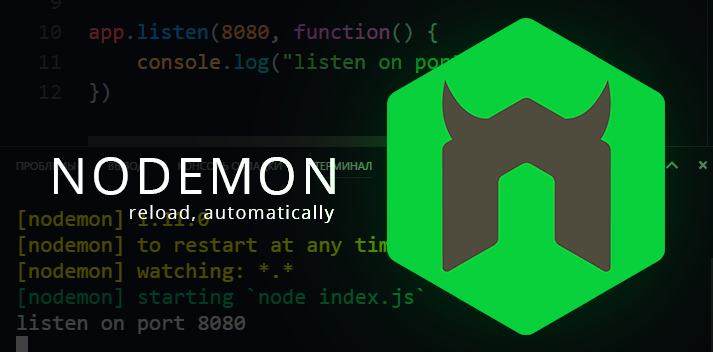

Express
First things first...
A good package to install when working on a Node application is Nodemon. Nodemon is a utility that will monitor for any changes in your codde and automatically restart your server. It is perfect for development. We can install it with the following command on the terminal:
npm install nodemon
Now we just have to change the way we run our app.js file, we use nodemon app.js
instead of node app.js.
ExpressJS

Express.js, or simply Express, is a back end web application framework for Node.js, released as free and open-source software under the MIT License. It is designed for building web applications and APIs. It has been called the de facto standard server framework for Node.js. We can install it with the following command on the terminal:
npm install express